Raw 4K footage
Every usable clip in 4K, color corrected so it looks right straight out of the folder, or in a flat log profile if your own editor wants to grade it. Good for your team, an agency or a broadcast.
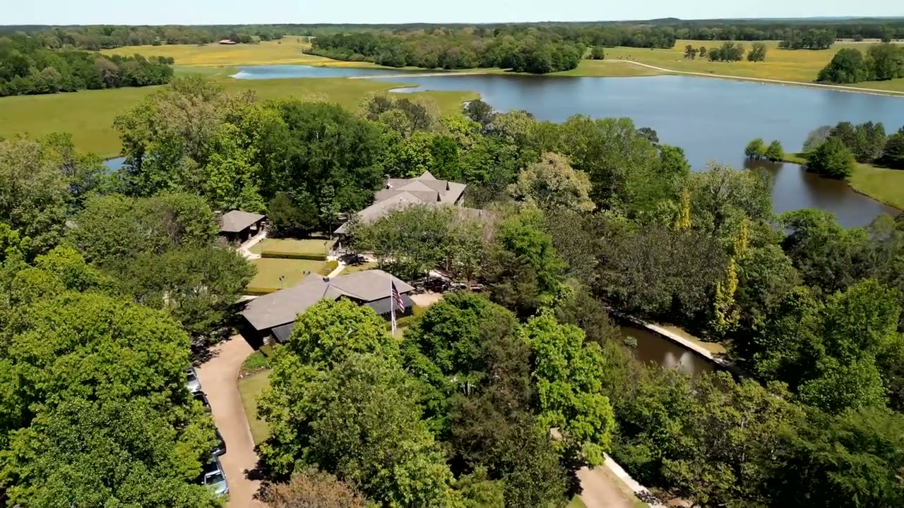
Samuel Long Productions is an aerial footage and video production company serving Oxford, MS, Madison, MS and the rest of Mississippi. I'm Samuel Long, an FAA Part 107 certified drone pilot. I fly a DJI Mavic 3 Pro for businesses, property, schools, events and weddings, then edit the footage myself.
By Samuel Long · Updated November 20, 2026
A property film built around drone aerials, and the aerials in a brand film for Lee Michaels Fine Jewelry. Both were shot, edited and color graded by me.
Property film, drone aerials
Lee Michaels Fine Jewelry, brand film with drone aerials
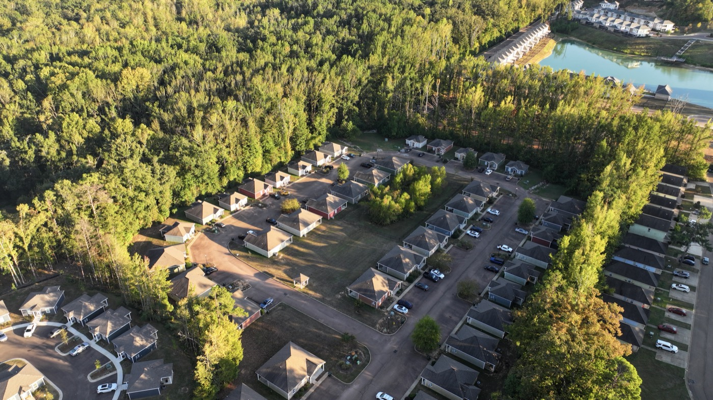
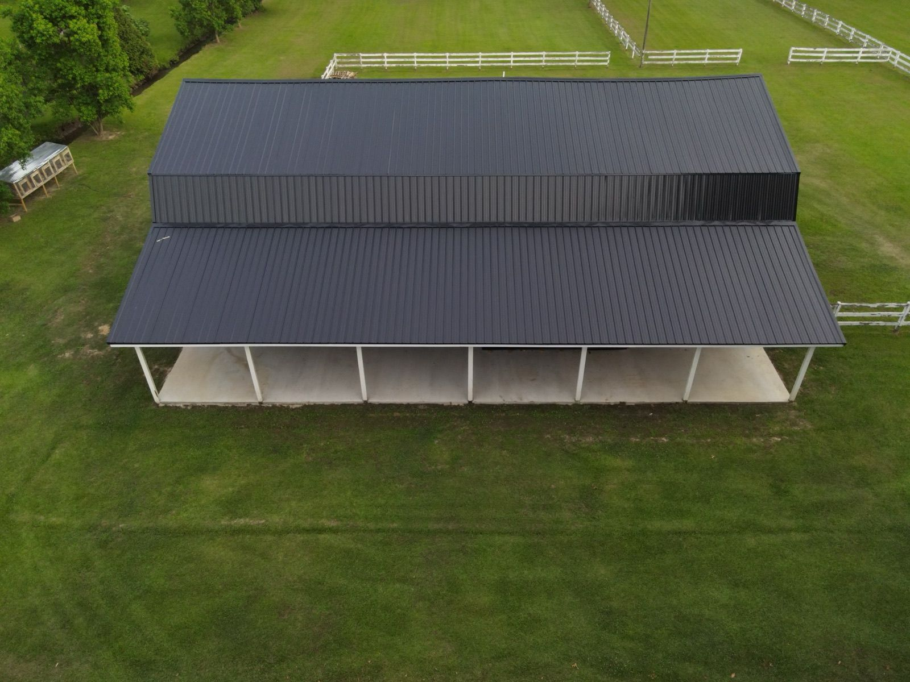
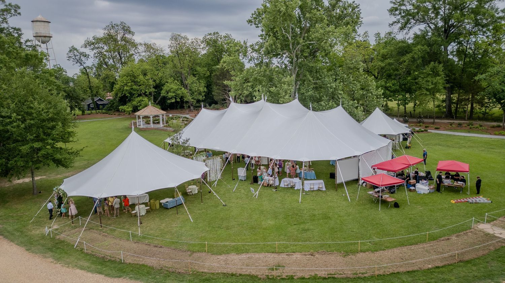
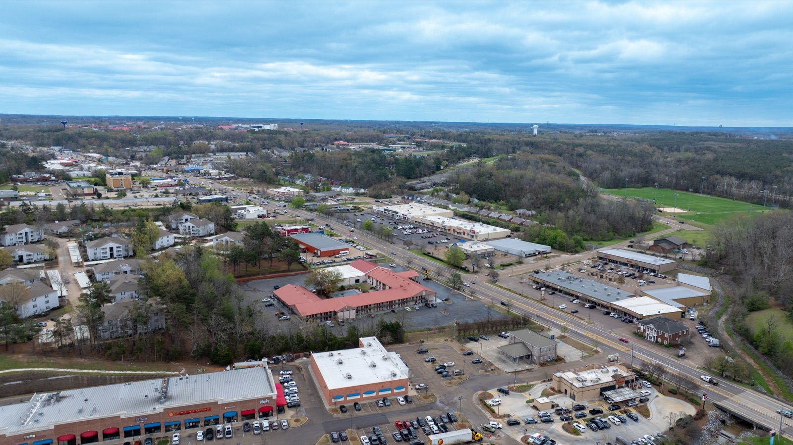
More aerials are on my photo portfolio and my commercial video, photo and drone page.
This fall I've been the drone pilot for Victory Event Group and its media team at Ole Miss fraternity concerts, flying headliner nights with ACRAZE, CeeLo Green, Rae Sremmurd and Yung Gravy. The reel is a few of those nights, graded from the raw drone files.
Night shows take planning. On campus, each flight goes through a UPD-approved UAS request with a set time window. I fly off to the side of the crowd, and the team gets the raw footage in log and Rec 709, on their card before I leave or by download link the next day, ready for their own edit.
Ole Miss fraternity concerts, fall 2026, drone aerials
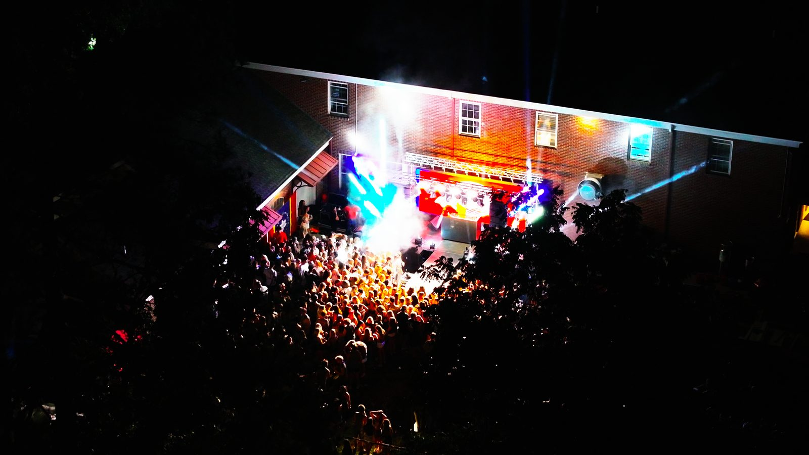
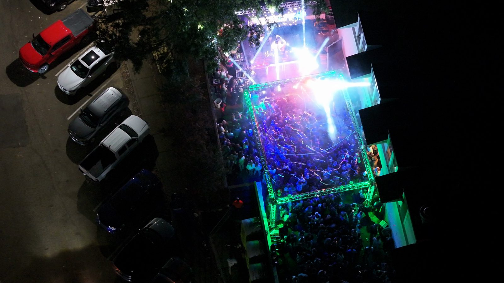
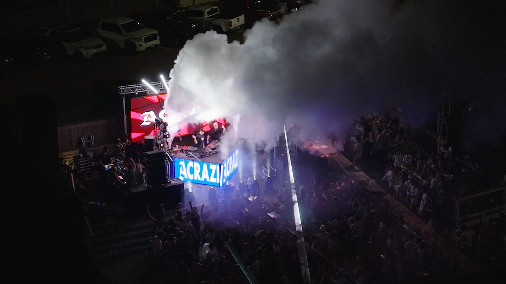
Some drone companies hand over raw clips and stop there. I'm a video production company that flies, so you can take the raw footage, a finished edit or both, and tell me where it's going.
Every usable clip in 4K, color corrected so it looks right straight out of the folder, or in a flat log profile if your own editor wants to grade it. Good for your team, an agency or a broadcast.
Cut to licensed music and color graded, from a seamless loop for your homepage to a few minutes for a presentation. Widescreen for your website and screens, plus vertical cuts for Instagram, TikTok and Shorts.
Edited, high resolution stills from the same flight, sized for a listing, your website, social or print.
Opening shots for brand films, ads and websites, like the aerials in the Lee Michaels Fine Jewelry film. Drone is part of my Premium brand film wherever it's permitted.
Listings, commercial property, land, barns and new developments, like the Acadia Loop homes and the shopping centers I've flown in Oxford. My real estate drone guide covers timing and delivery.
A site, a build or a field crew at work, filmed in one visit or at each stage, for presentations, conferences and progress updates.
Campus and stadium aerials for school and team hype films, and aerials for a live championship football broadcast.
Fraternity concerts with headliner acts, date party and formal films, and a drone add-on for event coverage, framed from the side so I'm never flying over the crowd.
The venue, the grounds and the exit from above. Drone is part of my Story and Legacy wedding films.
I serve two home areas: Oxford and Lafayette County in North Mississippi, and the Jackson metro. I travel anywhere in the state for aerial work, and the quote covers the trip.
Most of Oxford, Madison and Ridgeland is open airspace at drone altitudes. Downtown Jackson, Fondren, Pearl, Flowood and Brandon sit inside the FAA's grid around the Jackson airports, so I request authorization before I fly there. On Ole Miss property, each flight goes through a UPD-approved UAS request. The details are in my drone questions guide for Oxford and Jackson and my guide to flying a drone at Ole Miss.
Yes. I've held an FAA Part 107 Remote Pilot Certificate since 2021. The FAA requires one for any drone flight done for pay or for a business (14 CFR 107.12).
Yes. When a venue, school or property owner needs a certificate of insurance naming them, I send it before the shoot, along with a copy of my Part 107 certificate.
I do. The FAA controls the airspace and the owner controls the ground, so I check the airspace for your address, file any FAA authorization and get approval from the property owner, venue or campus police where it's needed. You tell me where and when.
Not directly over a crowd. FAA rules limit flying over people who aren't part of the shoot (14 CFR 107.39), so I frame crowds from the side. Big stadiums have their own rule: during NFL, MLB, NCAA Division I football and major speedway events at stadiums with 30,000 or more seats, no drone can fly within 3 nautical miles from an hour before the event to an hour after. Smaller venues need the venue's permission.
Rain and strong wind ground a drone, so aerial work is always weather permitting. For a property or a site, we move the flight to the next good day. At an event, the rest of the coverage goes on without the aerials.
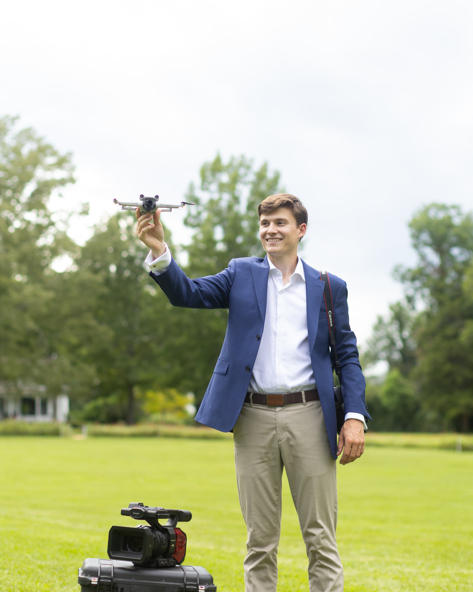
Whoever you hire, these are the questions worth asking first.
Anyone flying for pay needs one. A hobby pilot's TRUST certificate covers flying for fun, not paid work.
Schools, stadiums and venues often ask for one before they'll approve a flight, so find out how quickly the pilot can send it.
A reel from places like yours tells you more than a national network's sample page for your city.
Some drone operators deliver raw clips only. If you need a finished video, ask whether editing, color grading and licensed music are part of the job.
Ask whether you get the raw files, and whether you can use the footage on your website, in ads and on broadcast.
Near Jackson's airports and on college campuses, approvals take time. A good pilot checks your address and files them for you.
It depends on the job: raw footage or a finished edit, how many locations, how far I travel and whether the airspace needs approval. Drone is already part of my Premium brand film, the Story and Legacy wedding films and the date party and formal film, and those prices are on my video pricing page. For stand-alone aerial work, send me the address and what you need, and I'll quote it.
If you want it. Say so when you ask for a quote, and I'll include the raw 4K clips along with the edit.
Anywhere in Mississippi. Oxford and the Jackson metro are home, and for anywhere else the quote includes the trip.
In open airspace, only my calendar. Where a flight needs approval, like near the Jackson airports or on a campus, plan on at least a week.
Yes. I can cut 9:16 versions for Instagram, TikTok and YouTube Shorts alongside the widescreen film.
Yes, wherever the airspace and the location allow it, so one booking covers the ground and the air.
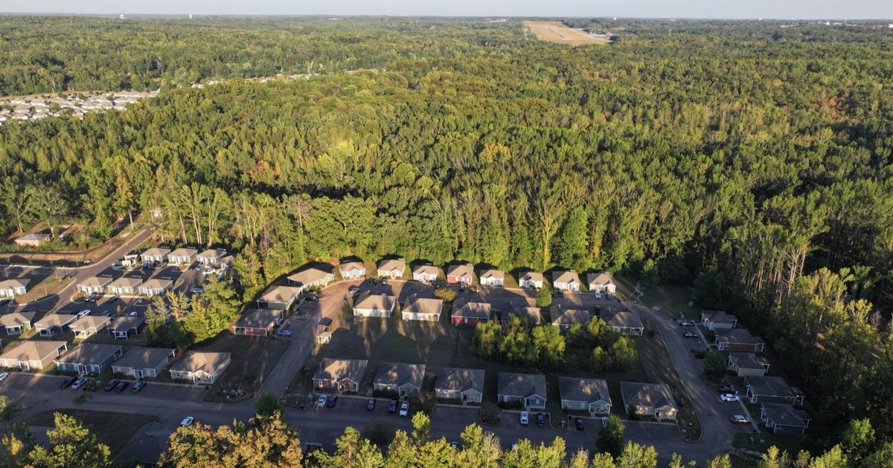
Hiring a drone photographer in Oxford and Jackson, MS Licensing, airspace, notice and weather, answered.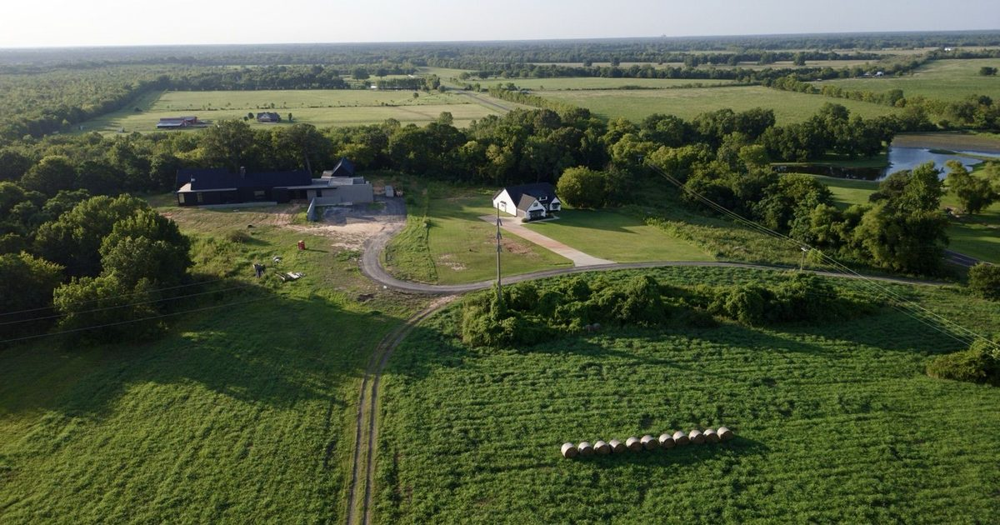
Real estate drone photography Listings, land and barns in Oxford and the Jackson metro. Can you fly a drone at Ole Miss? UPD approval, Athletics venues and the game day ban.Checked November 20, 2026. Rules change, so check the official pages before you fly.
Send me the address or the venue, the date, and whether you want raw footage, a finished edit or both. I'll check the airspace and reply personally, usually within a day, or email me at samuel@samuellongproductions.com.
Get an aerial quote